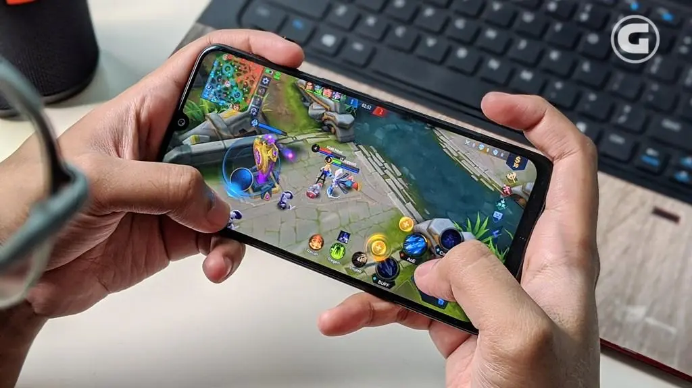
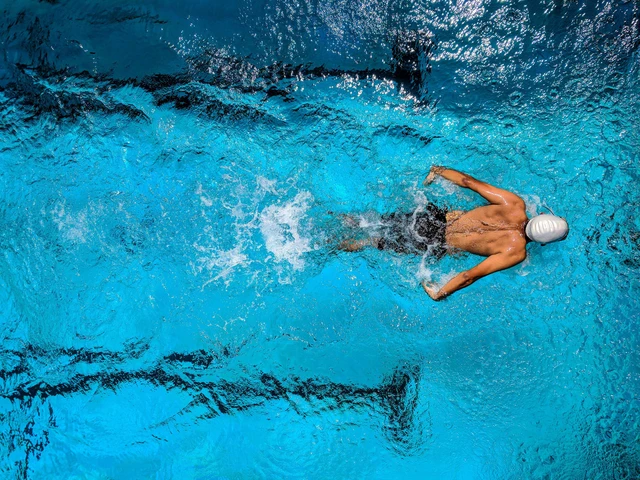
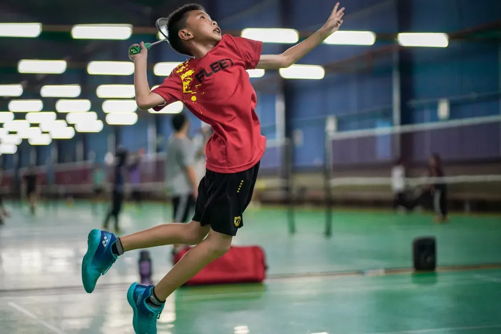

Galeri Hobi
Berikut beberapa ilustrasi yang mewakili kegiatan yang saya sukai. Gambar pada halaman ini merupakan ilustrasi sederhana untuk tugas web.



Video dan Pesan
Berikut adalah contoh cuplikan video kegiatan berenang yang menajubkan dari Egor Kornev:
“Keseimbangan itu penting. Tetap semangat mengejar tujuan, tetapi jangan lupa menikmati proses dan menjaga kesehatan.”
Catatan: kutipan di atas adalah pesan motivasi untuk halaman ini.
Kembali ke beranda atau lihat daftar kegiatan.